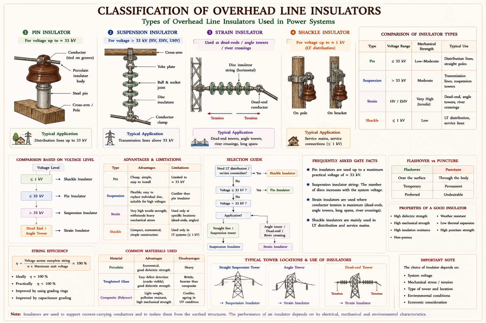
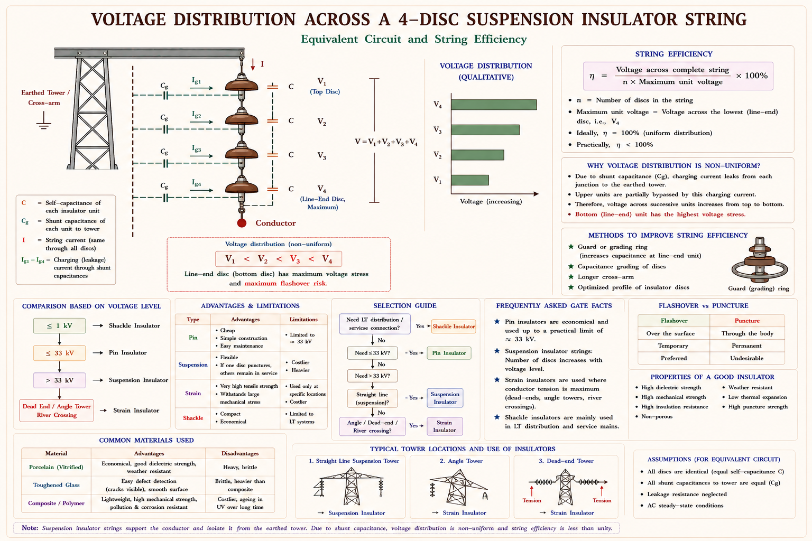
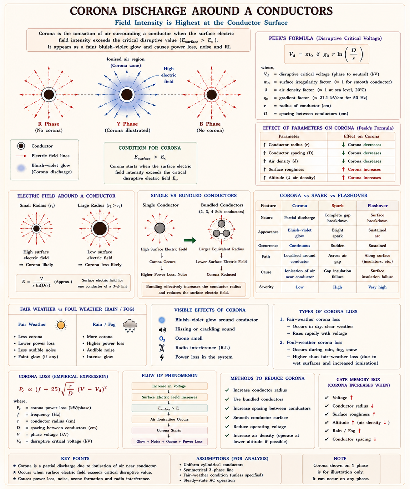
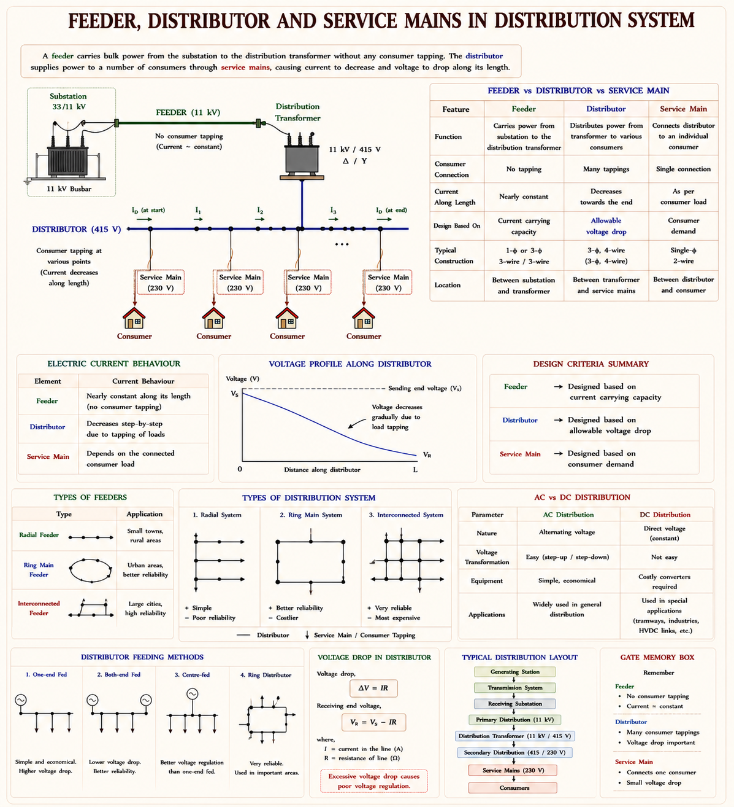
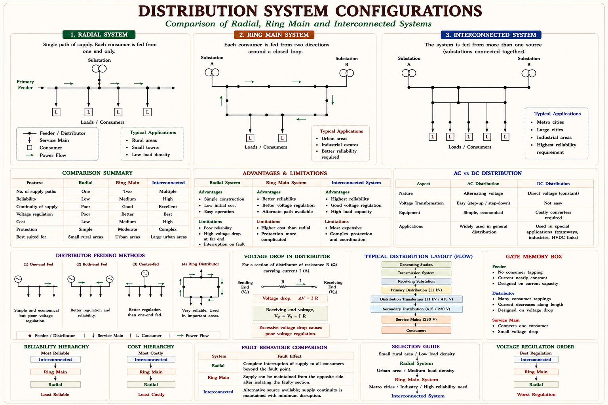
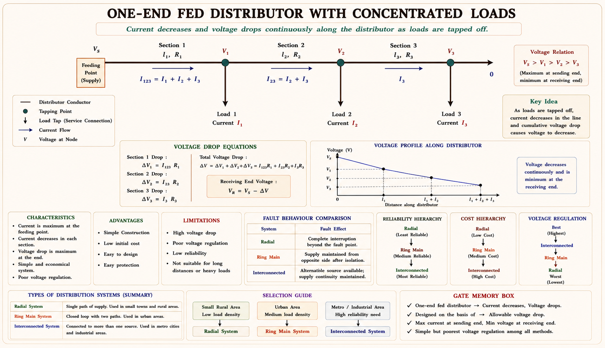

Overhead line insulators and their materials, voltage distribution and string efficiency of suspension insulator strings, the physics of corona discharge and its critical voltage, and the layout, connection schemes and voltage-drop behaviour of distribution systems — with full derivations and GATE/IES exam focus.
An overhead transmission or distribution conductor is a bare wire strung between towers, carried at thousands of volts above the ground. Somewhere between that live conductor and the earthed steel tower, a physical break in the electrical path is essential — otherwise the entire structure, and anything touching it, would be energised. The component that provides this break while still mechanically supporting the conductor's weight, wind load, and tension is the overhead line insulator.
An insulator therefore has to do two jobs simultaneously that pull in opposite directions: it must be an excellent electrical insulator (so leakage current to the tower is negligible), and it must be a strong mechanical member (so it never cracks or snaps under the conductor's tension, ice loading, or wind). This dual requirement — electrical isolation plus mechanical strength — is the reason insulators are made from special ceramic, glass, or composite materials rather than ordinary plastic.
As transmission voltage rises, the electric field stress across the insulator surface rises too. A single rigid ceramic shell can only withstand a limited voltage before it flashes over or punctures. This is exactly why higher voltages use strings of insulator discs connected in series — each disc shares a fraction of the total line voltage, so the string as a whole can be rated for any voltage simply by adding more discs.
This chapter builds on the transmission-line-constants coverage from the previous chapter. Once a conductor's electrical parameters (resistance, inductance, capacitance) are known, the next practical question an engineer faces is: how is that conductor physically supported and insulated from the tower, and how does the network deliver power onward from the sub-station to individual consumers? That is the scope of this chapter — insulators, the corona phenomenon associated with high-voltage conductors, and the distribution network that follows transmission.
Four materials dominate overhead-line insulator manufacture: porcelain, toughened glass, steatite, and modern synthetic (composite/polymer) resins. Each is chosen for a particular combination of dielectric strength, mechanical strength, and cost.
| Material | Typical Dielectric Strength | Key Characteristics |
|---|---|---|
| Porcelain | ~60 kV/cm | Fired mixture of quartz, kaolin and feldspar; mechanically stronger than glass; unaffected by dirt deposits and temperature swings; the traditional workhorse material up to about 33 kV per unit. |
| Toughened Glass | ~140 kV/cm | Cheaper than porcelain in simple shapes; higher dielectric and compressive strength; a hairline internal defect causes the whole disc to shatter visibly — a built-in self-indicating fault mechanism that is actually an inspection advantage. |
| Steatite | Higher than porcelain | A naturally occurring magnesium silicate; superior tensile and bending strength; preferred where the line takes a sharp turn or at tension/dead-end towers where bending loads are high. |
| Synthetic / Composite Resin | Very high | Fibre-reinforced polymer core with silicone rubber sheds; light weight, vandal-resistant, excellent pollution performance; increasingly preferred for new EHV lines despite higher initial cost. |
Regardless of material, a good overhead-line insulator is judged against the same checklist used by design engineers everywhere in the world:
If an over-voltage transient exceeds the insulator's withstand level, the discharge should occur as a surface flash-over — a visible arc across the outside of the shell — rather than as an internal puncture. A flash-over leaves the insulator undamaged and it can go straight back into service; a puncture destroys the disc permanently and requires replacement. Good insulator design therefore deliberately keeps the puncture strength several times higher than the flash-over voltage.
Four broad families of insulator cover essentially every overhead line situation encountered in practice: pin, suspension, strain, and shackle insulators. Each is shaped for a specific mechanical role, not merely a different voltage class.

A pin insulator is mounted rigidly on a steel pin fixed to the cross-arm, with the conductor tied into a groove on top. It is economical for voltages up to about 25 kV, and multi-part pin units extend this to roughly 33 kV — beyond which the unit becomes disproportionately heavy and expensive, since cost rises faster than voltage: Cost ∝ Vx with x > 2. This super-linear cost growth is precisely why pin insulators are not used above 33 kV.
For voltages beyond 33 kV, a single rigid disc cannot withstand the voltage stress reliably, so several identical discs are connected in series to form a string, hung vertically from the cross-arm with the conductor clamped at the free (lower) end. Each disc is typically rated for about 11 kV, so the number of discs in a string scales roughly with the operating voltage — a 132 kV line typically needs about 9–10 discs, while a 400 kV line needs 22–23. If one disc in the string fails, only that disc is replaced — the whole string does not need to be discarded, which is a major maintenance advantage over pin insulators.
At a dead-end tower, a river or road crossing, or anywhere the line changes direction sharply, the insulator must additionally carry the full mechanical tension of the conductor, not just its weight. Strain insulators are mechanically strengthened disc units used in a horizontal (rather than vertical) orientation for exactly this purpose.
Shackle insulators are small, low-voltage units used on L.T. distribution lines, at section and end poles, on sharp turns, and for service connections into individual consumer premises. They can be mounted in either a horizontal or a vertical position depending on the pole geometry.
Vertical string → suspension (carries weight, hangs free). Horizontal string → strain (carries tension, at line ends). Rigid single unit → pin (low voltage, fixed orientation). Small D-shaped unit → shackle (L.T. service lines).
Although every disc in a suspension string is physically identical, the voltage across each disc is not equal. The reason is entirely electrical, not mechanical: each metal cap-and-pin junction between two discs is a certain distance from the earthed tower structure, and that proximity creates a small parasitic (stray) capacitance from the junction to the tower. This stray capacitance diverts a little current to earth at every junction, so the current flowing down the string is not constant — and therefore neither is the voltage across each disc.
Model each disc as a capacitor of self-capacitance C (the capacitance between its own top cap and bottom pin). At every junction between discs, add a second, much smaller capacitor of value C₁ connecting that junction to the earthed tower — this is the stray or shunt capacitance. Define the ratio k = C₁ / C. This single ratio k controls how uneven the voltage distribution becomes.

Let \(V_1\) be the voltage across the disc nearest the cross-arm (tower end), and work downward toward the conductor. Applying Kirchhoff's current law at each junction — the current entering a disc equals the current that left the previous disc plus whatever leaked away through that junction's shunt capacitance — gives a clean recursive pattern.
Adding all four discs gives the total voltage across the complete string:
Notice that each successive disc voltage is a polynomial in k with strictly larger coefficients — the voltage across the disc nearest the conductor is always the largest, and the one nearest the cross-arm is always the smallest. This is why the disc nearest the power conductor is the one most likely to flash over first, and why it is deliberately checked first during inspection.
Because the disc nearest the conductor always carries the highest share of voltage, that disc is the first to approach its flash-over limit — even while the other discs in the string are still comfortably under-stressed. String efficiency is the figure of merit that captures how evenly (or unevenly) the total voltage is shared across the string.
If every disc carried an equal share, η would be exactly 1 (100%). Since \(V_n\) (the disc nearest the conductor) is always the largest individual disc voltage, the denominator \(n \times V_n\) always overstates what a perfectly even distribution would give — so η is always strictly less than unity in a real string. A higher string efficiency simply means the string is being used more effectively; it does not mean the string is somehow "more insulated."
Grading (by capacitance grading or by a guard ring) serves two distinct purposes: (1) it equalises the voltage drop across each unit, improving string efficiency, and (2) when combined with an arcing horn, it protects the insulator string from flash-over damage whenever an over-voltage appears between the tower structure and the power conductor.
Insulators sit exposed to weather, pollution, mechanical stress, and lightning for decades, so understanding failure modes is a core part of transmission-line maintenance.
| Cause | Mechanism |
|---|---|
| Porosity / cracking | Manufacturing defects or thermal cycling create internal voids that gradually develop into cracks, weakening dielectric strength. |
| Puncture | An over-voltage that exceeds the internal withstand of a weak (porous) disc breaks down the ceramic itself rather than flashing over its surface. |
| Flash-over from dust deposits | Conductive dust or industrial pollution accumulates on the surface; in humid conditions it forms a partially conductive film that lowers the effective flash-over voltage. |
| Shattering by power arcs | A sustained fault arc (e.g., from a nearby flash-over) can thermally shock and shatter a disc, especially toughened glass units. |
| Mechanical stress failure | Excess tension, ice loading, or wind can exceed the mechanical rating of the disc, cracking the ceramic or glass shell. |
| Bird / foreign-object short circuits | Birds or debris bridging the gap between conductor and tower can create localised flash-over paths that damage nearby insulators. |
Glass insulators have a useful self-diagnosing property: internal stress from a developing defect typically causes the disc to shatter completely and visibly rather than degrade silently, which makes faulty units easy to spot during a line patrol. Porcelain units, by contrast, can develop hairline cracks invisible from the ground, which is why porcelain strings need periodic insulation-resistance (hot-line) testing rather than visual inspection alone.
Air is not a perfect insulator — it always contains a small number of free electrons and ions produced by cosmic rays and natural radioactivity. Normally these stray charges are far too few to matter. But right at the surface of a high-voltage conductor, the electric field is at its most intense (field strength falls off rapidly as you move away from a curved conductor surface), and if that surface field exceeds the dielectric strength of air, those free electrons are accelerated hard enough to knock more electrons out of neutral air molecules on collision — an avalanche of ionisation. The visible, audible result of this localised ionisation is called corona.

For two parallel conductors of radius \(r\) separated by distance \(d\), the surface field of a conductor is directly proportional to the charge on it, which in turn is proportional to the applied voltage. Setting this surface field equal to the breakdown strength of air gives the critical disruptive voltage:
where \(g_0\) is the dielectric strength of air at normal temperature and pressure (NTP): \(g_0 = 30\) kV/cm (peak) \(= 21.1\) kV/cm (rms).
The 30 kV/cm figure only holds exactly at NTP. Actual sites differ in altitude, pressure, and temperature, so an air density factor δ is introduced to scale the breakdown strength to real conditions:
where \(h\) = atmospheric pressure in cm of mercury, \(t\) = temperature in °C. The corrected critical disruptive voltage becomes:
Here \(m\) is a surface irregularity factor that accounts for the conductor not being perfectly smooth — real stranded conductors have a rougher surface than an idealised solid cylinder, which locally intensifies the field at surface irregularities and triggers corona a little earlier than theory predicts for a smooth conductor.
| Conductor Surface | Irregularity Factor m |
|---|---|
| Smooth, polished, solid conductor | 1.0 |
| Rough or stranded conductor | 0.93 – 0.98 |
| Seven-strand cable | 0.83 – 0.87 |
| More than seven strands | 0.90 |
The GMD (geometric mean distance) from the previous chapter's line-constants work reappears here naturally — corona depends on the same conductor spacing geometry that governs inductance and capacitance.
When corona is only just beginning, the ionisation may be occurring but is not yet visible to the eye — it needs to intensify further before the glow becomes visually apparent. The voltage at which the glow actually becomes visible is called the visual critical disruptive voltage, always somewhat higher than the (invisible) disruptive critical voltage:
Two special surface conditions have their own irregularity factors: local corona (ionisation confined to isolated rough spots, e.g. where ice has deposited unevenly) uses \(m \approx 0.72\); decided corona (visible glow at specific points on an ice-coated conductor) uses \(m \approx 0.8\).
Every ionisation event in the corona sheath dissipates a small amount of real power as heat, light, and sound. Summed over the whole length of a line, this becomes a genuine, measurable power loss — corona loss — that adds to the ordinary I²R loss already present in the conductor. The classical (Peek's) empirical formula for corona loss per phase is:
where \(f\) = supply frequency (Hz), \(\delta\) = air density factor, \(r\) = conductor radius (cm), \(d\) = spacing between conductors (m), \(V_{ph}\) = actual phase (rms) operating voltage, and \(V_d\) = critical disruptive voltage (rms/phase). This formula only produces a loss when \(V_{ph} > V_d\) — if the operating voltage never exceeds the critical disruptive voltage, corona simply never forms and the loss is zero.
Corona loss grows with frequency (more ionisation cycles per second), shrinks as air density rises (denser air is harder to ionise), grows with the square root of the radius-to-spacing ratio, and — most importantly — grows with the square of how far the operating voltage exceeds the critical disruptive voltage. This squared term dominates: even a modest increase in operating voltage above \(V_d\) causes a disproportionately large jump in corona loss.
| Factor | Effect on Corona Loss | Physical Reason |
|---|---|---|
| ↑ Supply frequency | Increases | Loss ∝ (f + 25) — more ionisation cycles occur per second at higher frequency. |
| AC vs DC transmission | AC > DC | AC continuously reverses field polarity, sustaining ionisation on both half-cycles; DC corona is generally lower for the same voltage. |
| Positive vs negative polarity (DC) | Positive higher | At a positive electrode, electrons move toward the conductor faster under the field, producing a lower critical disruptive voltage and hence higher loss than at a negative electrode. |
| Waveform distortion / harmonics | Increases | Harmonic content raises the peak field intensity for a given rms voltage, pushing the surface field above the threshold more often. |
| Lower conductor height above ground | Increases | Lower height increases capacitance to ground, which raises the effective operating stress on the conductor surface. |
Both temperature and pressure enter the loss formula only through the air density factor \(\delta = 3.92h/(273+t)\), so \(P \propto 1/\delta\), while \(V_d \propto \delta\). As δ rises, the critical voltage rises (harder to ionise dense air), so \((V_{ph}-V_d)^2\) falls — both effects reduce corona loss together. Conversely, at high altitude (lower pressure, lower δ), corona loss is markedly higher than at sea level for the same conductor and voltage — a design consideration for hill-area transmission lines. Surface deposits of dust, ice, or snow act as impurities that locally reduce the effective dielectric strength of air near the conductor, lowering \(V_d\) and therefore raising loss.
Increasing the conductor's physical diameter has two opposing effects on the loss formula — one pushing loss up, one pulling it down — and the net effect in practice is a reduction in corona loss:
This is precisely why EHV lines use bundle conductors — several sub-conductors per phase instead of one large solid conductor. A bundle has a much larger effective diameter (and hence a larger effective GMR) for the same total metal cross-section, which raises the critical disruptive voltage and suppresses corona, while also improving the line's inductance and capacitance as covered in the previous chapter.
Corona is generally treated as an unwanted loss mechanism, but it is not purely harmful — it has one genuinely useful side-effect that design engineers deliberately exploit.
A single hollow conductor of very large diameter is mechanically awkward and expensive to manufacture at the scale needed for EHV lines. A bundle of ordinary stranded sub-conductors achieves the same "large effective diameter" benefit using standard, cheaper conductor stock — which is why every line above roughly 220–275 kV uses bundle conductors rather than a single oversized one. Below that voltage, corona is not significant enough to justify the added mechanical complexity of bundling.
At the terminal bushing of an HV power transformer or circuit breaker, the fitting shape itself can create a locally intense field. A corona ring (also called a grading or anti-corona ring) — a smooth toroidal metal ring around the terminal — spreads the field over a larger effective radius and suppresses corona at that specific point, without needing to bundle or hollow the equipment terminal itself.
Transmission gets bulk power efficiently from a generating station to a load area at high voltage. The distribution system takes over from there — it is the part of the network that spreads that power out to individual consumers at usable, safe voltage levels.

A conductor connecting the sub-station (or a major distribution point) to the area to be supplied, with no direct consumer taps along its length. It is designed purely for current-carrying capacity, since its loading is essentially fixed by the total downstream demand.
A conductor from which consumers are tapped through service mains at several points along its length. Because current is drawn off progressively, the current in a distributor is not constant — it is designed on the basis of permissible voltage drop, not just current capacity.
The short conductor or cable that finally connects an individual consumer's premises to the nearby distributor.
AC distribution dominates almost universally because a transformer lets voltage be stepped up or down cheaply and efficiently at every stage — generation, transmission, and final delivery. DC distribution survives only in specialised applications: electrochemical processes and variable-speed DC-motor drives, where power is first converted from AC to DC at a sub-station and then distributed as either a 2-wire or 3-wire DC system.
How a distributor is wired back to its source dictates cost, reliability, and voltage-drop behaviour. Three schemes cover practically every distribution network in use.

Separate feeders radiate outward from a single sub-station and feed their distributors at one end only — the simplest and cheapest topology.
The distributor is arranged as a closed loop, and every consumer is effectively fed from two directions simultaneously — through two parallel paths around the ring.
Here the ring feeder itself is energised by two or more independent generating stations or sub-stations rather than just one.
A distributor loses current progressively along its length as consumers tap off power, so the voltage drop calculation looks quite different from a simple two-ended transmission line. Four standard loading patterns cover essentially every practical case.

With loop resistance \(r\) (Ω/metre) and all loads at unity power factor, the current in each section simply adds up as you move back toward the source — the section nearest the source carries the sum of every downstream load.
When each tapped load has its own power factor angle \(\phi\), both resistance and reactance contribute to the drop, since the current now has both in-phase and quadrature components relative to the sending-end voltage:
where \(r\) and \(x\) are the loop resistance and reactance per metre of the distributor.
Instead of a handful of concentrated taps, imagine current being drawn off continuously and evenly along the whole length — a reasonable approximation for a residential street with many small, evenly spread consumers. Let \(i\) = current tapped per metre length, \(l\) = total length, so total current \(I = i l\).
where \(R = lr\) and \(X = lx\) are the total resistance and reactance of the distributor. Notice the factor of ½ — a uniformly tapped distributor behaves, for voltage-drop purposes, exactly like a single concentrated load of the same total current \(I\) placed at the electrical midpoint of the distributor.
Feeding the same uniformly loaded distributor from both ends simultaneously roughly halves the maximum current any single section must carry, and the point of minimum voltage shifts to the electrical middle of the distributor:
Compare the coefficients: fed at one end the drop is \(I/2\) times \((R\cos\phi+X\sin\phi)\); fed at both ends it is only \(I/8\) times the same quantity — a fourfold reduction. This is exactly why long rural distributors, or distributors expected to grow in load over time, are often designed to be fed from both ends wherever a second source is available nearby.
Capacitors are added to a distribution network for three closely related reasons: voltage improvement, loss reduction, and power-factor improvement. Where the capacitor is connected — series or shunt — determines which benefit dominates.
Given: n = 3, k = 0.2, V₁ = 12 kV
Total voltage:
String efficiency:
V₃ (19.68 kV) is indeed the largest of the three disc voltages, confirming that the disc nearest the conductor is the most stressed unit — exactly as the theory predicts.
Given: n = 4, η = 0.88, V₄ = 15 kV
Given: n = 4, \(V_4 = 0.30\,V\)
Given: r = 1.2 cm, GMD = 5 m = 500 cm, δ = 0.95, m = 0.95
Actual operating phase voltage:
Conclusion: Since \(V_{ph}\) (127.0 kV) is less than \(V_d\) (137.9 kV), the operating voltage never reaches the disruptive threshold — corona does not occur under normal fair-weather conditions on this line.
Corona loss follows \(P \propto (f+25)\), so:
Given: l = 300 m = 0.3 km, I = 150 A, cosφ = 0.9 → sinφ = 0.436
These sub-topics recur consistently across GATE EE (Power Systems) and IES E&T papers:
In a suspension insulator string, the voltage across the disc nearest the power conductor is always the largest because:
Explanation: Every disc is physically identical. The asymmetry arises purely from the stray shunt capacitance at each junction, which diverts additional current into each successive disc as you move down the string toward the conductor — leading to the polynomial voltage growth \(V_2=V_1(1+k)\), \(V_3=V_1(1+3k+k^2)\), and so on.
A guard ring fitted around the bottom disc of a suspension string improves string efficiency mainly because it:
Explanation: The guard ring's own capacitance to the line conductor offsets the leakage effect of the tower-side shunt capacitance at each junction, flattening the voltage distribution. As a secondary benefit it also acts as an arcing horn, guiding a flash-over path through open air rather than through the disc material.
If the operating phase voltage of a line is increased from a value equal to the critical disruptive voltage \(V_d\) to a value \(20\%\) above \(V_d\), corona loss (all else unchanged) approximately:
Explanation: At \(V_{ph}=V_d\) the loss term \((V_{ph}-V_d)^2\) is exactly zero — corona has not yet begun. The moment operating voltage exceeds \(V_d\), loss appears and grows with the square of the excess voltage, not linearly, which is why even a modest over-voltage above the critical value causes disproportionately higher corona loss.
Compared to a radial distribution system, a ring main system offers improved reliability primarily because:
Explanation: In a radial system a single fault blacks out everything downstream of it. In a ring main, the faulted section can be isolated at its two ends while supply to every other consumer continues to flow through the alternate half of the ring — this is the core reliability advantage, not voltage level or protection cost.
The disc nearest the power conductor (the "Bottom" of the string) always bears the largest share of voltage — the "Brunt" of the electrical stress. Whenever a question asks which disc fails first or which one to inspect first, the answer is always the one nearest the conductor.
Corona loss is proportional to the square of \((V_{ph}-V_d)\) — remember this as the single most-tested numeric relationship in the corona topic. A small increase in operating voltage above the critical disruptive voltage causes a much larger jump in loss than intuition suggests.
Have a question on string efficiency, corona, or distribution system design? Type below or pick a suggestion.
Insulators must be electrically strong (high resistance, high permittivity) and mechanically strong. Puncture strength should exceed flash-over voltage. Four families: pin (≤33 kV), suspension (>33 kV, vertical), strain (horizontal, tension), shackle (L.T. service).
Stray shunt capacitance \(C_1\) (ratio \(k = C_1/C\)) makes voltage rise disc-by-disc toward the conductor: \(V_2=V_1(1+k)\), \(V_3=V_1(1+3k+k^2)\), \(V_4=V_1(1+6k+5k^2+k^3)\). Bottom disc always carries the maximum voltage.
\(\eta = \frac{V}{n \times V_n}\), always < 100%. Improved by longer cross-arms, capacitance grading, or a guard (arcing) ring — the ring also protects against flash-over during surges.
Corona = localised air ionisation at the conductor surface once field exceeds ~30 kV/cm peak (NTP). \(V_d = 21.1 \, m \, \delta \, r \, \ln(\text{GMD}/r)\) kV/phase. Signs: hissing, ozone smell, bluish glow.
\(P \propto \frac{f+25}{\delta} \sqrt{\frac{r}{d}} (V_{ph}-V_d)^2\) — appears only once \(V_{ph} > V_d\), and grows with the square of the excess voltage. Larger diameter / bundle conductors suppress corona.
Feeder: no direct taps, sized on current. Distributor: many taps, sized on voltage drop. Service main: connects consumer to distributor. AC distribution dominates due to easy transformation.
Radial: cheapest, least reliable, worst far-end voltage drop. Ring main: less copper, better reliability via two feed paths. Interconnected: fed by 2+ sources, highest reliability, better load factor.
Concentrated loads: drop = \(\sum I_k(r \cos\phi + x \sin\phi)l_k\). Uniform load fed one end: drop = \(\frac{I}{2}(R \cos\phi+X \sin\phi)\). Uniform load fed both ends: drop to midpoint = \(\frac{I}{8}(R \cos\phi+X \sin\phi)\) — a 4× improvement.
Series capacitor: affects downstream side, mainly voltage improvement (AVB = low-cost variant). Shunt capacitor: affects upstream side, mainly loss reduction and power-factor improvement.
Core concepts in this chapter follow the standard treatment found in these textbooks. All explanations, derivations, diagrams and worked examples on this page are original to Aarova AI.